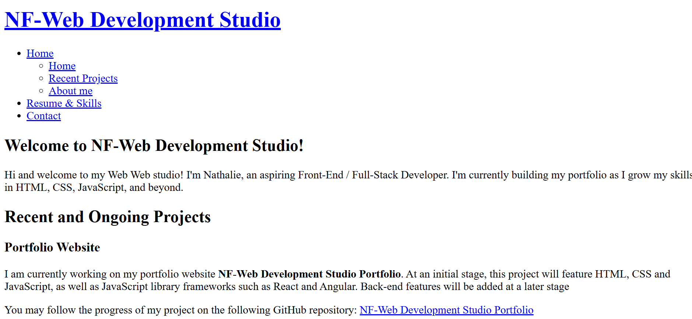

Welcome to NF-Web Development Studio!
Hello and welcome! I am Nathalie, a Web developer-in-training blending code with creativity. From semantic HTML5 and responsive CSS to dynamic JavaScript and future dives into frameworks like React, this portfolio is both a sandbox and a showcase. You're invited to explore my code-driven evolution—feedback, and connections are always appreciated!
Recent and Ongoing Projects
Portfolio Website
I'm currently developing my portfolio site, NF-Web Development Studio Portfolio, as a hands-on way to grow and showcase my skills. The first phase focuses on front-end technologies—HTML, CSS, and JavaScript — along with libraries and frameworks like React and Angular. As the project evolves, I plan to integrate back-end features to build a more complete, full-stack experience.
You can follow the project's progress and updates on my GitHub repository:
NF-Web Development Studio Portfolio 